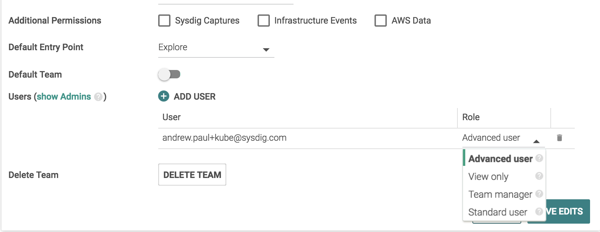

Manage Teams and Roles
The use of teams provides a strategic way to organize groups, streamline workflows, or protect data, as needed by an organization. Administrators who design and implement teams should have in-depth knowledge of organizational infrastructure and goals.
Note
Only Advanced users can configure team permissions
For more information, including foundational concepts, see User and Team Administration.
Create a Team
Log in to Sysdig Monitor or Sysdig Secure as administrator and select
Settings.
Select Teams.Click
Add Team.Configure the team options and click
Save.
Note
For more information on each configuration option, refer to Table 1: Team Settings.
Table 1: Team Settings
Setting | Req'd | Description |
Color | Yes | Assigns a color to the team to make them easier to identify quickly in a list. |
Name | Yes | The name of the team as it will appear in the “Switch to” drop-down selector and other menus. |
Description | No | Longer description for the team. |
Default Team | No | If users are not assigned to any team, they will automatically be a part of this team if it's turned on. |
Default Entry Point | Yes | Defaults to the Explore page; choose an alternate entry if needed. |
Scope by | No | Determines the highest level the data to which team members will have visibility. If set for “Host”, Team members can see all Host-level and Container-level information. If set for “Container”, Team members can see only Container-level information. |
Scope | Yes | Further limits what data Team members can see by specifying tag/value expressions for metrics. The pull-down selector defaults to “is”, but can be changed to “is not”, “in”, "contains", and etc. Complex policies can be created by clicking “Add another” to create AND chains of several expressions. Note that making changes to the Scope settings can have a dramatic impact on what’s visualized in the Team’s Dashboards that are already configured, so you may want to carefully review these before/after your change. |
Additional Permissions | Sysdig Capture - Check this box to allow this team to take Sysdig Captures. Captures will only be visible to members of this team. WARNING: Captures will include detailed information from every container on a host, regardless of the team’s Scope. Infrastructure Events - Check this box to allow this team to view ALL infrastructure events (from every user and agent. Otherwise, this team will only see infrastructure events sent specifically to this team. (Previously called "custom events.") AWS Data - Check this box to give this team access to AWS metrics and tags. All AWS data is made available, regardless of the team’s Scope. | |
Team Users | No | Click to select any non-Admin users to be immediately added to this Team. Admins are filtered out by default, since they are members of every team automatically. |
Configure an Entry Page or Dashboard for a Team
Some teams benefit from using a default entry point other than the usual Explore page, as users who don't need in-depth monitoring information can onboard and navigate Sysdig Monitor more efficiently.
Use the Default Entry Point setting on the Team page, as shown in Create a Team.
Note: If selecting a dashboard, open the secondary Dashboard drop-down menu, or type the name of the dashboard to select it.
(The dropdown is only populated with shared dashboards accessible by anyone on the team.)
Add and Configure Team Members
Users can be assigned to multiple teams. Team assignment is made from the Team page (not the User page), and must be done by an Administrator or Team Manager.
Warning
Users added in Sysdig Monitor will appear in the full list of users for both Sysdig Monitor and Sysdig Secure, if both products are in use. However, users will not have log in access to Sysdig Secure until they are added to a Sysdig Secure team.
Assign a User to a Team
Log in to Sysdig Monitor or Sysdig Secure as administrator and select
Settings.SelectTeams.Select the relevant team from the list, or search for it with the search box, and then select the relevant team.
In the
Team Userssection, click theAssign Userbutton.Select the user from the drop-down list, or search for it and then select it.
Click the
Roledrop-down menu to select the user role:
Optional: Repeat steps 3 to 5 for each additional user.
Click
Save.
Assign Users a Team-Based Role
Review Team-Based Roles and Privileges for an overview.
In Sysdig Monitor, the default Advanced User permission can be further refined into either a View-only user or a Team Manager.
Managers can add or delete members from a team, or toggle members' rights between Edit, Read, or Manager.
Note that Admins have universal rights and are not designated as Team Managers, Advanced Users, View-Only users, or Standard users.
Manager or Advanced User permissions can be assigned even to Pending users; administrators do not have to wait for the user's first login to set these roles.
To assign a role to a user on a team:
Log in to Sysdig Monitor or Sysdig Secure as Administrator and either create a team or select a team to edit.
Add a user or select a user from the list of team members.
Select the appropriate role from the drop-down menu.
 Reminder of the role privileges:
Admin: Member of every team with full permissions. Can create/delete/configure all users and teams.
Advanced User: Read/write access to the components of the application available to the team. Can create/edit/delete dashboards, alerts, or other content.
Team Manager: Advanced User privileges + ability to add/delete team members or change team member permissions.
View-Only: Read access to the environment within team scope, but cannot create, edit, or delete dashboards, alerts, or other content.
Standard User: An Advanced User withno access to the Explore page (e.g. for developers who are not interested in Monitoring information).
Saveedits.
Edit Team Configuration
To configure an existing team:
Log in to Sysdig Monitor or Sysdig Secure as administrator and select
Settings.SelectTeams.Select the relevant team from the list, or search for it with the search box, and then select the relevant team.
Edit as needed, and click
Save. For more information regarding the configuration options, refer to Table 1: Team Settings.
Delete a Team
When a team is deleted, some users may become "orphans", as they are no longer a part of any team. These users will be moved to the default team.
The default team cannot be deleted. A new default team must be selected before the old default team can be deleted.
To delete a created team:
Log in to Sysdig Monitor or Sysdig Secure as administrator and select
Settings.SelectTeams.Select the relevant team from the list, or search for it with the search box, and then select the relevant team.
Click
Delete team, thenYes, deleteto confirm the change.